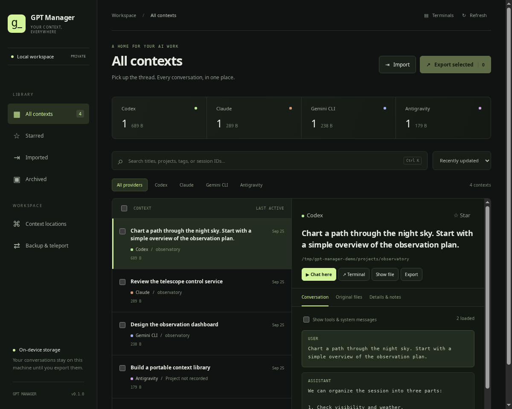

One place for every thread.
Browse provider stores, filter your library, and search titles, projects, tags, and session IDs. Star the keepers. Archive the rest.
FIND & ORGANIZEGood ideas shouldn’t get lost between terminals.
Give all your AI conversations a place to call home.
EARLY RELEASE · LINUX FIRST · MIT LICENSE

A real workspace. Shown with synthetic conversations.
Your chats have history, files, and a working directory. Keep them together in a workspace that makes sense.
Browse provider stores, filter your library, and search titles, projects, tags, and session IDs. Star the keepers. Archive the rest.
FIND & ORGANIZERead conversation history, inspect tool messages, and locate the original files. Large transcripts load in pages, so the library stays light.
INSPECT & UNDERSTANDResume a chat in your system terminal or stay in the manager with a live terminal tab. Your provider’s CLI and approval controls come with you.
RESUME & BUILDTake the conversation with you, along with its original context files and your notes.
Select contexts and export a portable .gptctx archive with a manifest and file checksums.
Transfer the archive to another machine through a channel you trust.
Verify and import it into another manager. Inspect immediately, then restore original files when you’re ready.
Archives contain private conversations and are not encrypted. Restoring never replaces existing files. Native resume may need a matching project checkout or provider index setup. Read the transfer details ↗
Add SSH aliases, discover nearby SSH servers, and see your remote conversations alongside local ones.
Choose an alias from SSH config or scan a selected local subnet for SSH servers. Machine labels make each context’s location clear.
SSH CONTEXT LOCATIONSResume on the source machine through an embedded SSH terminal. Your existing keys, host trust and provider installation stay in charge.
REMOTE RESUMEChoose Resume here and select a local checkout or copy the remote work folder. Review available Git updates before pulling. The source stays marked as handed off.
GUIDED TELEPORTSession locks coordinate GPT Manager launches on each host. External provider sessions and independent copies still need care; histories are never automatically merged. SSH setup and handoff details ↗
Connect an account from the manager, or choose an existing synced folder. Decide which contexts travel with you.
Account connection flows for OneDrive and iCloud, with Google Drive available once the project’s OAuth registration is configured. No manual connector installation.
DIRECT CONNECTIONSSync selected contexts or all local contexts. Run it when you want, or opt into a 15-minute schedule while the app is open. Previous snapshots stay intact.
MANUAL OR AUTOMATICChange a context’s launch directory, or move its original files to another store. File moves include conflict checks, byte verification, and a recovery archive.
MOVE WITH A BACKUPLive cloud account authentication is still awaiting provider-account testing. Google sign-in needs a one-time maintainer OAuth registration; synced folders are available for all three services. Cloud setup and current limits ↗
Start from source with Node.js 22.12+ (24 recommended), Python 3.10+, and a graphical desktop.
Install and authenticate your provider CLIs, then launch GPT Manager from your shell.
Full setup instructions# Get the workspace
git clone https://github.com/anolis/gpt-manager.git
cd gpt-manager
# Install and launch
npm install
npm startUse nvm use if you manage Node with nvm.
Built in the open. Linux is the first supported platform. macOS is unvalidated; Windows terminals and packaged installers aren’t available yet. Find a rough edge? Open an issue.